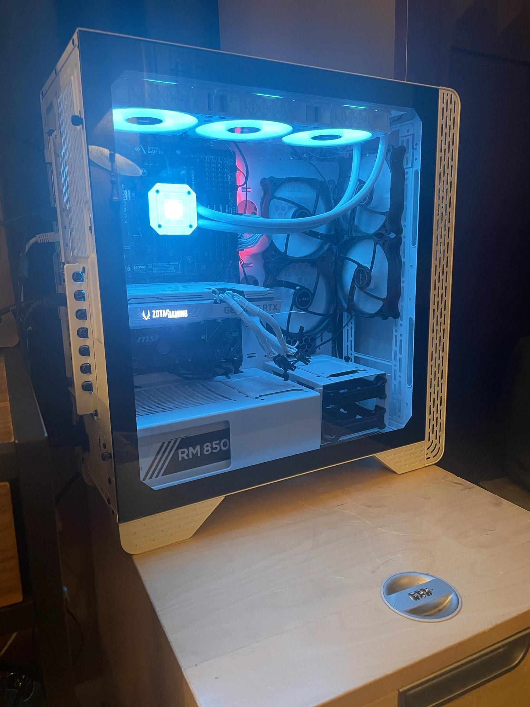
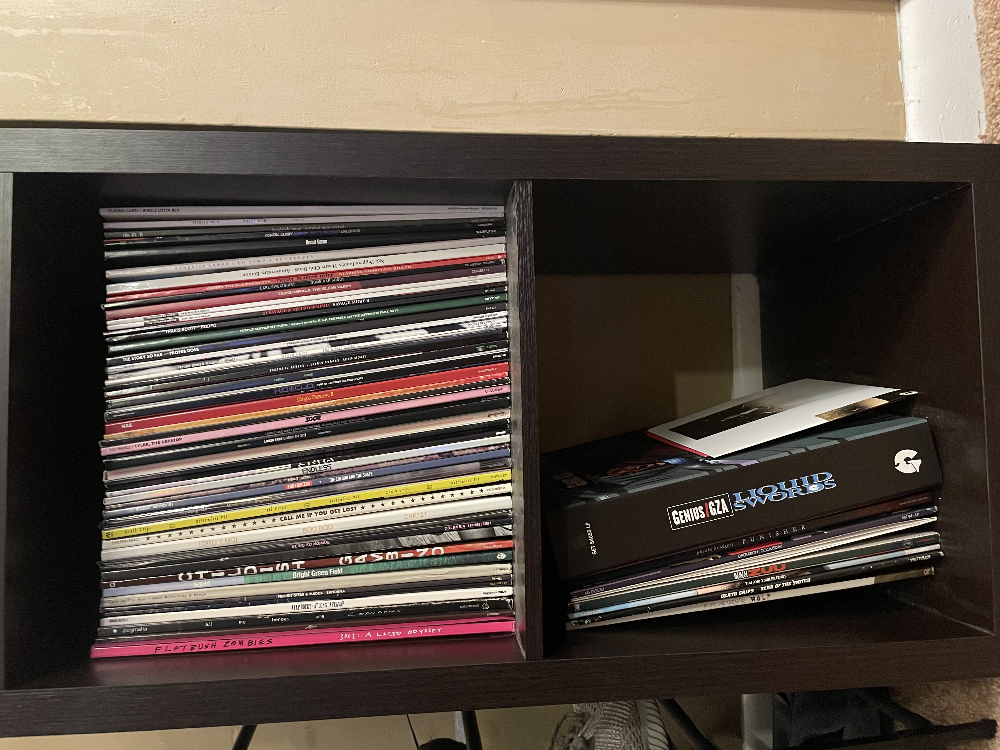
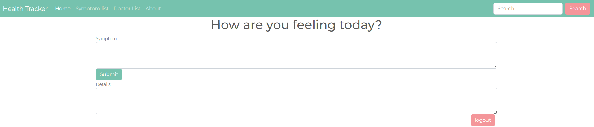
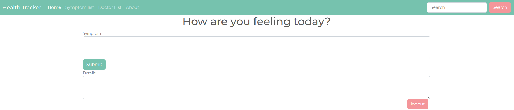

About Me
My name is Justin Smith, I am from Bloomfield, CT, recently moved from Atlanta, Georgia. I am an aspiring programmer. I got my start in exercise science and am certified as a Personal Trainer and Nutrition Coach. However, I have begun a career switch into tech that I am excited to explore. I have always had a strong passion for computer systems and hardware, but recently I have had my sights set on what makes these systems, and the applications we use everyday run on a software level. Between work and honing my skills as a programmer, you can find me in my off time improving myself in the gym, trying to expand my record collection or playing my favorite video games
 My Work
 
